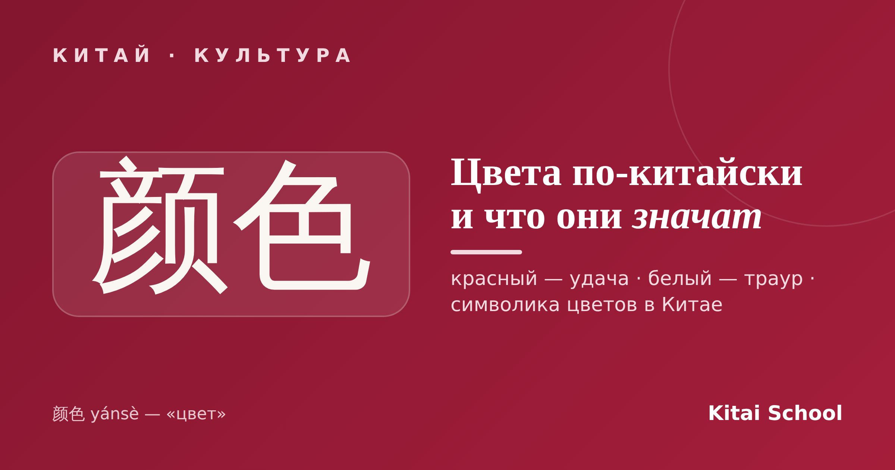
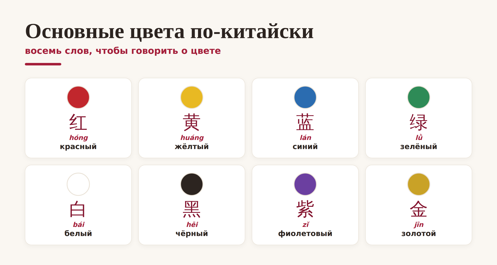
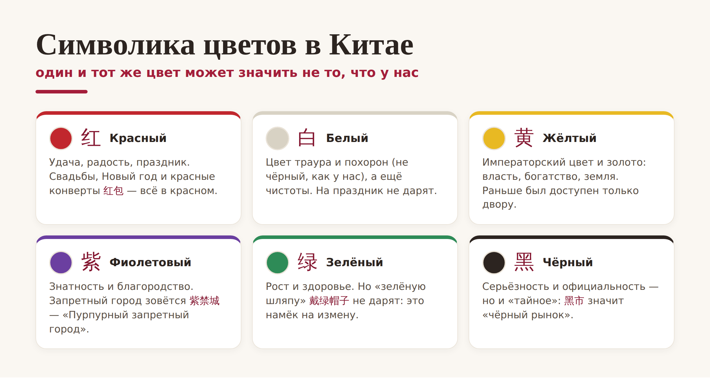

Китай · культура

Цвета в Китае — это отдельный язык. Один и тот же цвет здесь может значить совсем не то, что у нас: белый — это не про свадьбу, а про траур, а красный — самый счастливый цвет на свете. Разберём, как называются цвета на китайском и что стоит за символикой цветов в Китае.
Сначала — слова. Само «цвет» будет 颜色 (yánsè). Запомнить основные цвета на китайском несложно: их всего восемь, и они постоянно встречаются в быту:

Маленькая подсказка: многие «цветные» слова легко узнать в других выражениях. Например, 红 (hóng, «красный») прячется в слове 红包 (hóngbāo) — «красный конверт» с деньгами, а 黄 (huáng, «жёлтый») — в названии реки Хуанхэ, «Жёлтой реки».
А теперь самое интересное. За каждым цветом в Китае стоит свой смысл, и эта символика цветов сильно отличается от привычной нам:

Два самых важных контраста для нас. Красный цвет в Китае — главный: это удача, радость и праздник. В красном играют свадьбы, встречают Новый год, дарят в красных конвертах деньги. А вот белый, наоборот, — цвет траура и похорон, поэтому белые цветы или белую упаковку в подарок здесь не выбирают.
Эти мелочи реально влияют на то, как вас воспримут. Пара правил на всякий случай:
Дарите в красном и золотом. Красный цвет в Китае и золото уместны почти всегда — это пожелание удачи и достатка. Конверт, упаковка, открытка в этих цветах — беспроигрышный вариант.
Избегайте белого и чёрного в подарках. Особенно на праздник: они связаны с трауром и официальностью.
Не дарите зелёный головной убор. Звучит странно, но «надеть зелёную шляпу» (戴绿帽子) по-китайски означает, что человеку изменяет партнёр. Кепка или шапка зелёного цвета в подарок — неловкость.
Вывод. Учить цвета на китайском полезно вдвойне: вы и слова запоминаете, и считываете культурные сигналы. Достаточно помнить главное — красный к удаче, белый к трауру — и вы уже не ошибётесь в важных мелочах.
Вот и вся палитра: восемь простых слов и символика цветов, за которой — вся китайская культура. Теперь вы знаете не только, как называются цвета по-китайски, но и что они означают.
Ярких вам красок! 五颜六色。